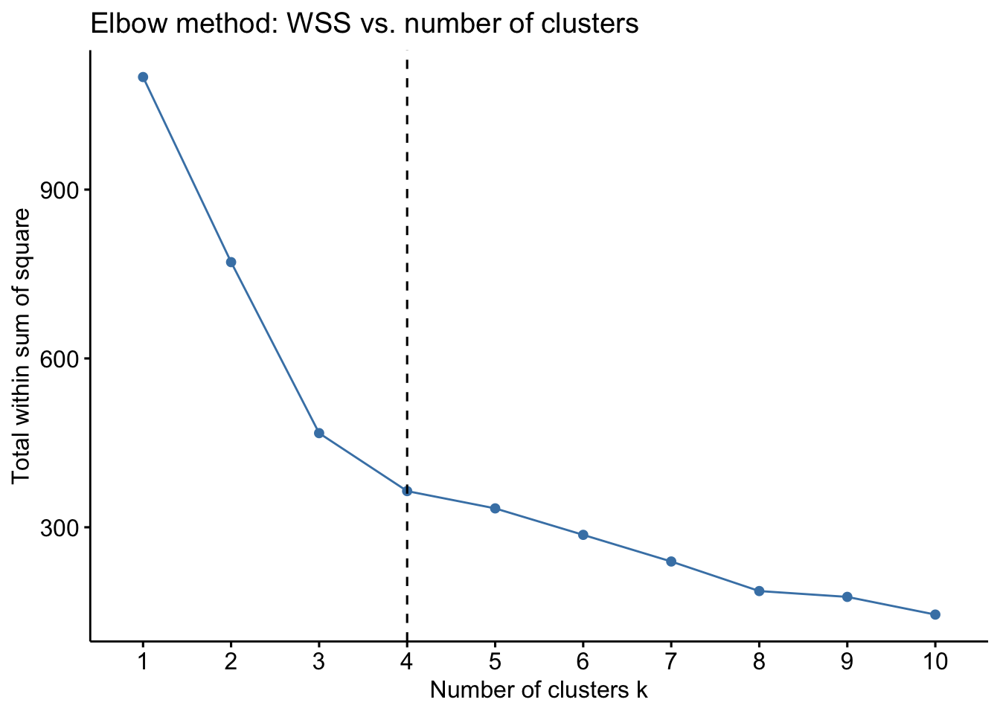
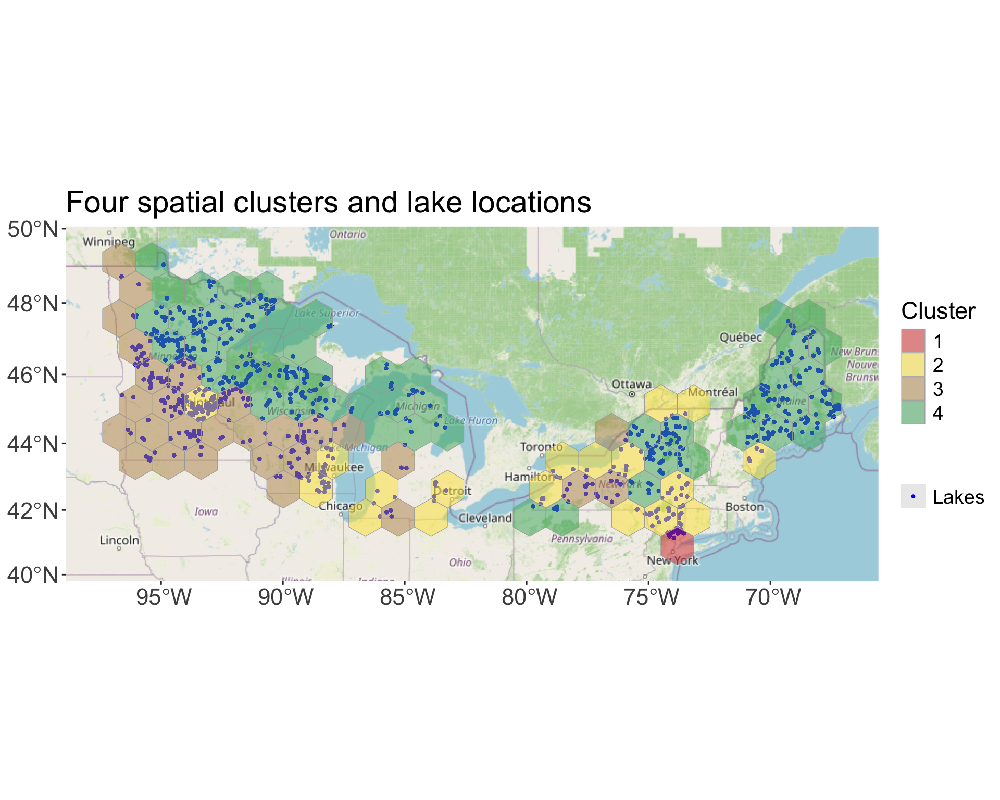
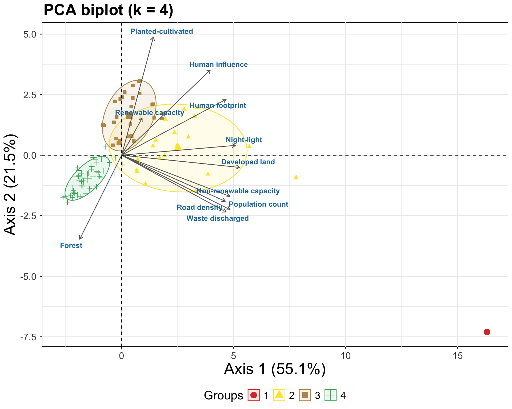
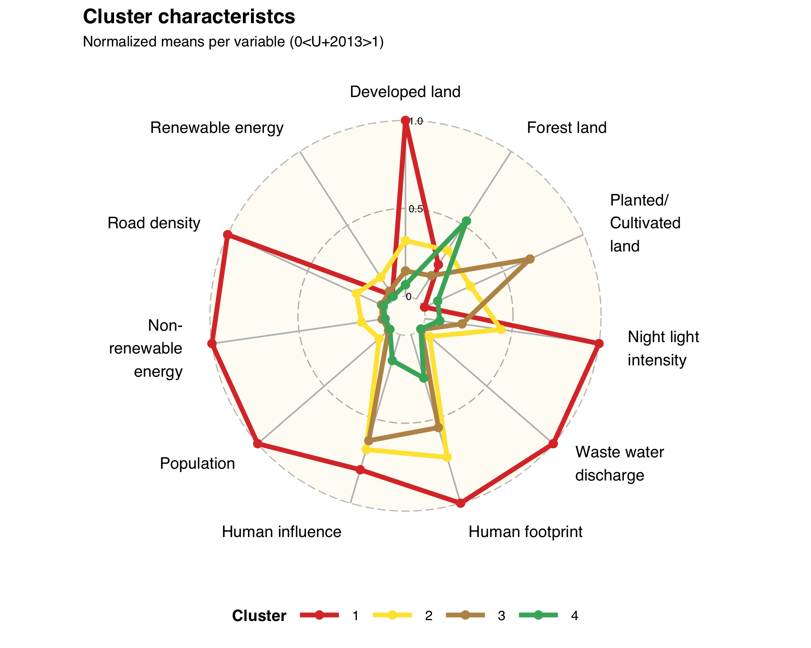
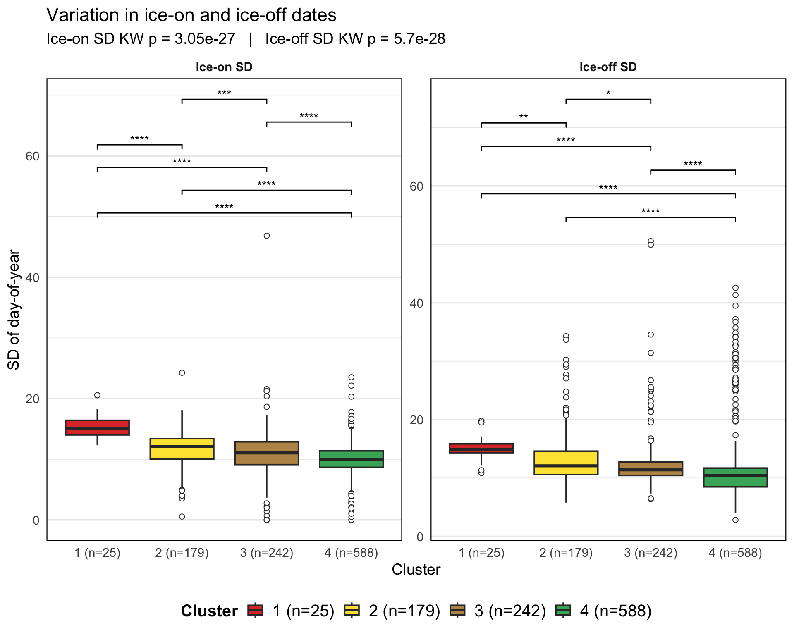
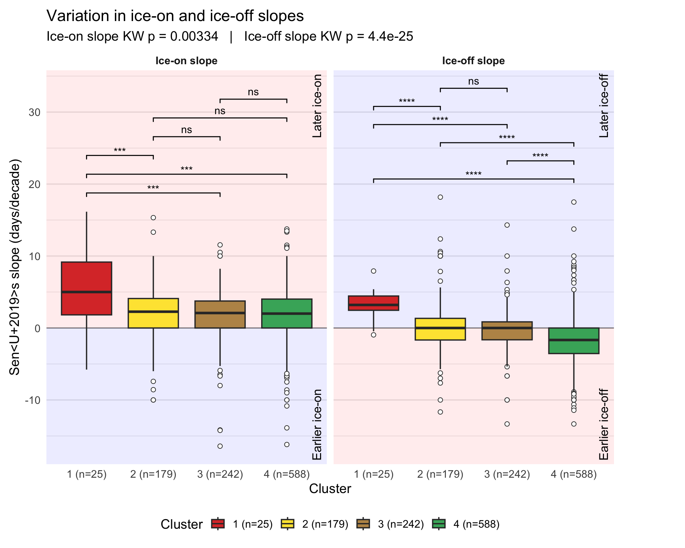
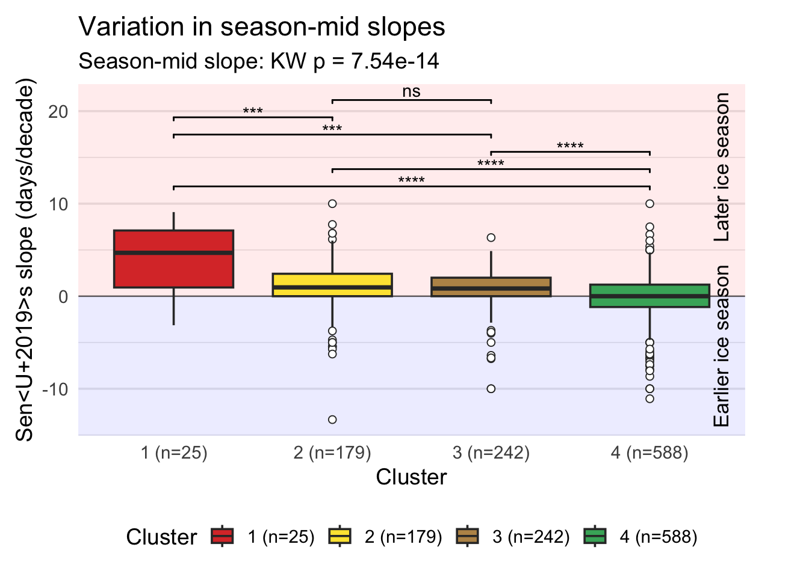
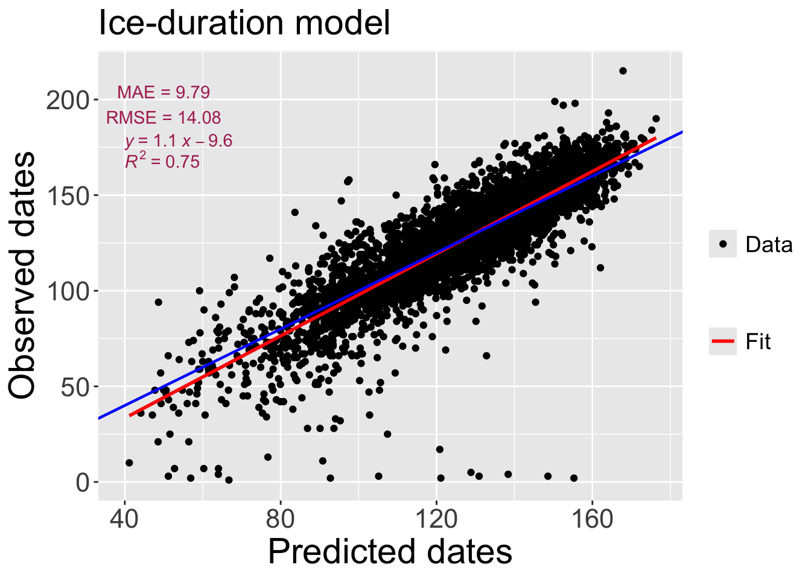
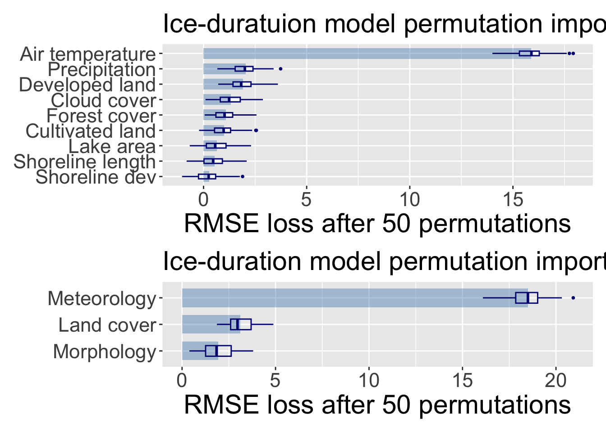
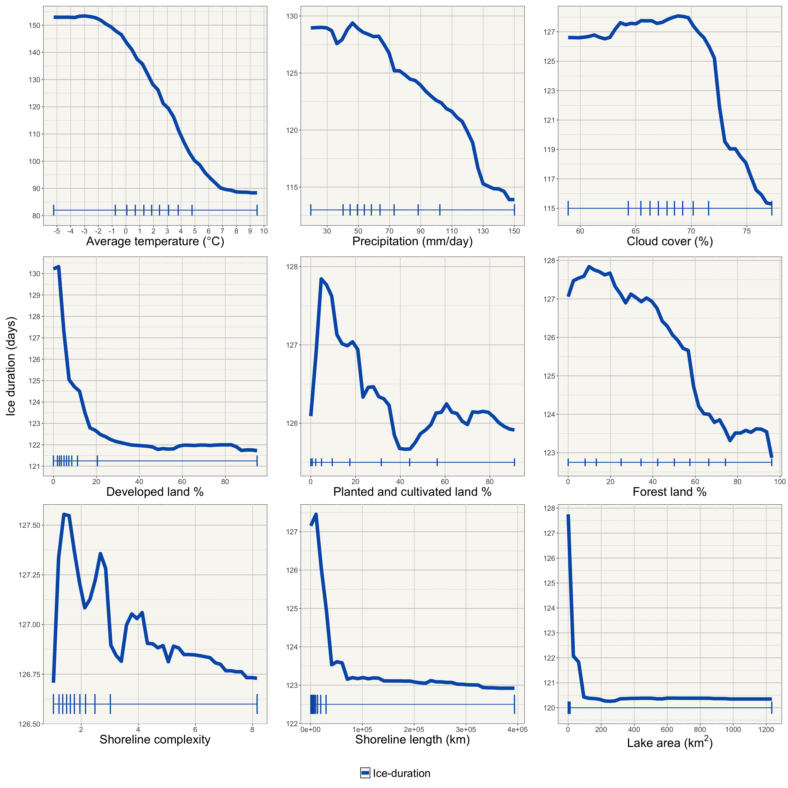

# regional scale analysis packages
library(here) # construct file paths relative to project root
library(tidyverse) # data manipulation and plotting (dplyr, ggplot2, tidyr, etc.)
library(sf) # simple features for spatial vector data
library(factoextra) # visualization helpers for PCA/clustering
library(ggspatial) # spatial map annotations (scale bars, north arrows)
library(RColorBrewer) # color palettes for maps and plots
library(cluster) # clustering algorithms and diagnostics
library(rstatix) # tidy statistical tests and helpers
library(trend) # trend tests (e.g., Mann–Kendall)
library(zyp) # robust trend estimation (Theil–Sen, trend slopes)
library(patchwork) # combine ggplots into complex layouts
library(ggpubr) # ggplot utilities for publication-ready plots
library(ggradar) # radar charts built on ggplot2
library(ggrepel) # non-overlapping text labels for ggplot2
# Local scale modeling packages
library(data.table) # fast data frames and I/O for large tables
library(blockCV) # create spatial blocks for cross-validation
library(doFuture) # parallel backend for foreach/future
library(mlr3verse) # mlr3 ecosystem: tasks, learners, workflows
library(mlr3spatiotempcv) # spatiotemporal resampling for mlr3
library(ranger) # fast random forest implementation
library(Metrics) # common evaluation metrics (MAE, RMSE, SMAPE)
library(pdp) # partial dependence / ICE plots
library(ggbreak) # axis breaks for ggplot2
library(cowplot) # arrange and align ggplots, themes
library(ggspatial) # (also used here) map annotations
library(scales) # scaling helpers for ggplot2 (labels, breaks)
library(forcats) # factor manipulation helpers (fct_* functions)Lake ice phenology with regional and local scale modeling
Introduction
This script includes codes for regional and local-scale modeling of lake ice phenology. The regional analysis involves data manipulation, exploratory data analysis, and statistical testing to identify trends and variability in lake ice phenology across various regions. Local-scale modeling uses machine learning algorithms to develop a model to understand important drivers of ice phenology.
Required Packages
The following packages are required for running the codes:
Regional Scale Analysis
The following datasets and shapefiles are used for regional scale analysis:
# Set working directory to project root and load datasets
setwd(here::here())
# This shapefile has the 150 km wide hexagonal blocks covering the study area.
hex_shapes <- read_sf("data/hex_shp/hex_150km.shp")
# This dataset have all the land cover characteristics for each hexagonal blocks covering the study area.
hex_stats <- read_csv("data/hex_stats.csv")
# This dataset has the ice phenology data for all the lakes in the study area.
ice_phenology_all <- read_csv("data/ice_phenology_all.csv")Creating spatial clusters of hexagonal blocks.
Determine the optimal number of clusters for the hexagonal blocks using the Elbow method (WSS):
# following variables will be used for clustering the hexagonal blocks.
hex_stats <- hex_stats %>%
select(hex_id, Developed_mean,
Forest_mean, Planted_Cultivated_mean,
night_light_mean, total_waste_discharged_m3_d,footprint_mean,influance_mean,
population_mean, nonrenewable_total_capacity_mw,road_density_mean,
renewable_total_capacity_mw
)
# convert the hex_stats dataframe to a matrix for clustering
hex_stats_mat <- hex_stats %>%
column_to_rownames("hex_id") %>%
as.matrix() %>%
scale() %>%
na.omit()
# set seed for reproducibility of clustering results
set.seed(34553)
# Determine optimal number of clusters using the Elbow method (WSS)
fviz_nbclust(
hex_stats_mat,
kmeans,
method = "wss"
) +
geom_vline(xintercept = 4, linetype = 2)+
labs(title = "Elbow method: WSS vs. number of clusters",
y = "Total within sum of square")
The optimal number of clusters is 4 based on the Elbow method. Now, we will perform K-means clustering with k=4 and visualize the clusters on a map.
# Set the number of clusters
k <-4
# set seed for reproducibility of clustering results
set.seed(3412)
# Perform K-means clustering with k=4
kmclust <- kmeans(hex_stats_mat , k, iter.max = 10, nstart = 25)
# Extract cluster assignments for each hexagonal block
cluster_assignments <- kmclust$cluster
# define colors for each cluster and murge cluster information with hexagonal block shapefile
cluster_cols <- c("#db3a34","#fee440","#bb9457","#44af69")
names(cluster_cols) <- as.character(1:k)
hexs_clustered <- hex_stats %>%
mutate(cluster = factor(cluster_assignments[as.character(hex_id)]))
hex_shapes_clustered <- hex_shapes %>%
left_join(hexs_clustered %>% select(hex_id, cluster), by = "hex_id")Processing ice phenology data and combining the cluster information with the ice phenology data for each lake. This includes applying inclusion/exclusion criteria for ice phenology data and imputing missing values for lakes with sufficient data.
# Ice phenology inclution exclusion criteria and imputation of missing values for lakes with at least 10 years of data and less than 15% missing values for ice on and ice off dates.
ice_on_imputed <- ice_phenology_all %>%
group_by(lake_id) %>%
mutate(num_mesur_ice_on = sum(!is.na(year),na.rm = T)) %>%
filter(num_mesur_ice_on>=10) %>%
mutate(ice_on_year_range = 1+(max(year,na.rm = T) -
min(year,na.rm = T))) %>%
mutate(per_missing = (1-(num_mesur_ice_on/ice_on_year_range))*100) %>%
mutate(ice_on_doy_imputed = if_else(per_missing <= 15 &
ice_on_date %in% NA &
year <= max(year,na.rm = T) &
year >= min(year,na.rm = T),
round(mean(ice_on_doy, na.rm =T)),
ice_on_doy)) %>%
dplyr::select(lake_id:year,ice_on_date,ice_on_doy_imputed)
ice_off_imputed <- ice_phenology_all %>%
group_by(lake_id) %>%
mutate(num_mesur_ice_off = sum(!is.na(year),na.rm = T)) %>%
filter(num_mesur_ice_off>=10) %>%
mutate(ice_off_year_range = 1+(max(year,na.rm = T) -
min(year,na.rm = T))) %>%
mutate(per_missing = (1-(num_mesur_ice_off/ice_off_year_range))*100) %>%
mutate(ice_off_doy_imputed = if_else(per_missing <= 15 &
ice_off_date %in% NA &
year <= max(year,na.rm = T) &
year >= min(year,na.rm = T),
round(mean(ice_off_doy, na.rm =T)),
ice_off_doy)) %>%
dplyr::select(lake_id:year,ice_off_date,ice_off_doy_imputed)
ice_phenology_imputed <- ice_on_imputed %>%
full_join(ice_off_imputed, by= c("lake_id","year","lat","lon")) %>%
mutate(on_off_both =
if_else(ice_on_doy_imputed %in% NA | ice_off_doy_imputed %in% NA,
F,T)) %>%
filter(year >= 1985 & year <= 2024) %>%
group_by(lake_id) %>%
mutate(include = if_else(any(!on_off_both), FALSE, TRUE)
) %>%
ungroup() %>%
filter(include == T) %>%
dplyr::select(-on_off_both,-include)
# convert the imputed ice phenology data to a spatial dataframe and perform spatial intersection with the clustered hexagonal blocks to assign cluster labels to each lake based on its location.
ice_sf <- ice_phenology_imputed %>%
drop_na(lat,lon) %>%
st_as_sf(coords = c("lon", "lat"), crs = 4326, remove = FALSE)
hits <- st_intersects(hex_shapes_clustered, ice_sf)
# Keep only hexagonal blocks that have at least one lake (i.e., at least one hit) and retain the cluster information for those blocks.
hex_shapes_clustered_t <- hex_shapes_clustered[lengths(hits) > 0, c("hex_id","geometry","cluster")]Plotting the spatial distribution of the clusters and the ice phenology data for each lake:
ggplot() +
annotation_map_tile(type = "osm", zoomin = 0) +
# lake locations (blue points, with legend)
geom_sf(
data = ice_sf,
aes(colour = "Lakes"),
size = 0.7
)+
# hex clusters (below)
geom_sf(
data = hex_shapes_clustered_t,
aes(fill = cluster),
colour = "darkgrey",
alpha = 0.5
) +
scale_fill_manual(
values = cluster_cols,
na.value = "grey80",
name = "Cluster"
) +
scale_color_manual(
values = c("Lakes" = "blue"),
name = ""
) +
guides(
fill = guide_legend(order = 1),
colour = guide_legend(order = 2)
) +
theme(
axis.text = element_text(size = rel(1.5)),
axis.title.y = element_text(size = rel(2)),
axis.title.x = element_text(size = rel(2)),
legend.title = element_text(size = 17, vjust = .5),
legend.text = element_text(size = 14),
plot.title = element_text(size = 22)
) +
labs(
title = "Four spatial clusters and lake locations"
)
PCA for vusualization of the clusters in the feature space:
# Scale and perform PCA on the hex_stats data (excluding hex_id and cluster columns) to visualize the clusters in the feature space.
pca5 <- prcomp(
hexs_clustered %>% select(-hex_id, -cluster),
scale. = TRUE
)
bp_tmp <- fviz_pca_biplot(
pca5,
geom.ind = "point",
pointsize = 2,
habillage = hexs_clustered$cluster,
palette = cluster_cols,
addEllipses = TRUE,
ellipse.level = 0.75,
label = "var", # <-- show var labels
col.var = "grey40",
repel = FALSE
)
# Extract the variable-label layer positions actually used in plot
gb <- ggplot_build(bp_tmp)
lab_idx <- which(vapply(
gb$data,
function(d) "label" %in% names(d),
logical(1)
))[1]
var_pos <- gb$data[[lab_idx]] %>%
transmute(orig = as.character(label), Axis.1 = x, Axis.2 = y)
nice_map <- c(
Forest_mean = "Forest",
Planted_Cultivated_mean = "Planted-cultivated",
influance_mean = "Human influence",
footprint_mean = "Human footprint",
night_light_mean = "Night-light",
Developed_mean = "Developed land",
nonrenewable_total_capacity_mw = "Non-renewable capacity",
renewable_total_capacity_mw = "Renewable capacity",
population_mean = "Population count",
road_density_mean = "Road density",
total_waste_discharged_m3_d = "Waste discharged"
)
var_pos <- var_pos %>%
mutate(
label = ifelse(orig %in% names(nice_map), nice_map[orig], prettify(orig))
)
# Rebuild the biplot without var labels, then add our own at the extracted coords
fviz_pca_biplot(
pca5,
geom.ind = "point",
pointsize = 2,
habillage = hexs_clustered$cluster,
palette = cluster_cols,
addEllipses = TRUE,
ellipse.level = 0.75,
label = "ind", # <-- hide default var labels
col.var = "grey40",
repel = FALSE
) +
ggtitle("PCA biplot (k = 4)") +
theme(
axis.text.x = element_text(size = rel(1.5)),
axis.text.y = element_text(size = rel(1.5)),
axis.title.y = element_text(size = rel(2)),
axis.title.x = element_text(size = rel(2)),
legend.title = element_text(size = 17, vjust = .5),
legend.text = element_text(size = 14),
plot.title = element_text(size = 22, face = "bold", hjust = 0.005),
plot.subtitle = element_text(size = 18, hjust = 0.005),
panel.background = element_rect(fill = "white", color = "black"),
legend.position = "bottom"
) +
geom_text_repel(
data = var_pos,
aes(x = Axis.1, y = Axis.2, label = label),
color = "#1f78b4", # highlight color for variable names
fontface = "bold",
size = 3.6,
seed = 42,
max.overlaps = Inf,
box.padding = 0.25,
point.padding = 0.1
) +
labs(x = "Axis 1 (55.1%)", y = "Axis 2 (21.5%)")
Create a radar chart to visualize the mean values of the original features for each cluster:
# Variables to plot on the radar chart (same as used for clustering)
var_cols <- c(
"Developed_mean",
"Forest_mean",
"Planted_Cultivated_mean",
"night_light_mean",
"total_waste_discharged_m3_d",
"footprint_mean",
"influance_mean",
"population_mean",
"nonrenewable_total_capacity_mw",
"road_density_mean",
"renewable_total_capacity_mw"
)
# Keep only rows that actually received a cluster (NA can happen due to NA rows removed by scale()/na.omit())
hex_for_radar <- hexs_clustered %>%
filter(!is.na(cluster)) %>%
select(cluster, all_of(var_cols)) %>%
mutate(cluster = factor(cluster, levels = names(cluster_cols))) # align legend/order with your colors
# Min–max scaling across all hexes
safe_minmax <- function(x) {
if (all(is.na(x))) {
return(x)
}
rng <- range(x, na.rm = TRUE)
if (diff(rng) == 0) {
return(rep(0, length(x)))
} # constant column -> zeros
(x - rng[1]) / (rng[2] - rng[1])
}
hex_scaled <- hex_for_radar %>%
mutate(across(all_of(var_cols), safe_minmax))
# Cluster-level means on scaled variables
cluster_means <- hex_scaled %>%
group_by(cluster) %>%
summarise(
across(all_of(var_cols), ~ mean(.x, na.rm = TRUE)),
.groups = "drop"
) %>%
rename(group = cluster)
# Coustom labels for radar chart axes
pretty_labels <- c(
Developed_mean = "Developed land",
Forest_mean = "Forest land",
Planted_Cultivated_mean = "Planted/\nCultivated\nland",
night_light_mean = "Night light\nintensity",
total_waste_discharged_m3_d = "Waste water\ndischarge",
footprint_mean = "Human footprint",
influance_mean = "Human influence",
population_mean = "Population",
nonrenewable_total_capacity_mw = "Non-\nrenewable\nenergy",
road_density_mean = "Road density",
renewable_total_capacity_mw = "Renewable energy"
)
radar_df <- cluster_means
names(radar_df) <- c("group", unname(pretty_labels[var_cols]))
# Create radar chart using ggradar with custom styling and colors for each cluster.
p_radar <- ggradar(
plot.data = radar_df,
grid.min = 0,
grid.mid = 0.5,
grid.max = 1,
values.radar = c("0 ", "0.5", "1.0"),
group.line.width = 2,
group.point.size = 3,
background.circle.colour = "#faedcd",
gridline.mid.colour = "darkgrey",
gridline.min.linetype = 2,
axis.label.size = 5,
grid.label.size = 4,
gridline.label.offset = 0.1,
legend.position = "bottom",
legend.title = "Cluster"
) +
scale_colour_manual(values = unname(cluster_cols)) +
scale_fill_manual(values = alpha(unname(cluster_cols), 0.25)) +
labs(
title = "Cluster characteristcs",
subtitle = "Normalized means per variable (0–1)"
) +
theme(
plot.title = element_text(face = "bold",size = 18),
legend.title = element_text(size = 14, face = "bold"),
legend.text = element_text(size = 12),
plot.subtitle = element_text(size = 13)
)
p_radar
Investigating the distribution of ice phenology metrics across clusters
# Calculate standard deviation and sens slopes of ice on and ice off dates for each lake and assign cluster labels to each lake.
hexs_for_join <- hex_shapes_clustered_t %>%
select(cluster)
ice_sf_clustered <- st_join(
ice_sf,
hexs_for_join,
join = st_within,
left = TRUE
)
slope_or_na <- function(x, y, min_n = 2) {
x <- x[is.finite(x)]
if (length(x) >= min_n) zyp.sen(x ~ y)$coefficients[2] else NA_real_
}
ice_sf_sd <- ice_sf_clustered %>%
group_by(lake_id) %>%
summarise(
cluster = first(cluster),
lat = first(lat),
lon = first(lon),
n_on = sum(is.finite(ice_on_doy_imputed)),
n_off = sum(is.finite(ice_off_doy_imputed)),
ice_on_sd = sd(ice_on_doy_imputed, na.rm = TRUE),
ice_off_sd = sd(ice_off_doy_imputed, na.rm = TRUE),
ice_on_slope = slope_or_na(ice_on_doy_imputed, year) * 10,
ice_off_slope = slope_or_na(ice_off_doy_imputed, year) * 10,
season_mid_slope = slope_or_na(
ice_on_doy_imputed +
round((ice_off_doy_imputed - ice_on_doy_imputed) / 2),
year
) *
10,
.groups = "drop"
)
knitr::kable(head(ice_sf_sd, 5), caption = "Top 5 rows of the ice sd and slope data")| lake_id | cluster | lat | lon | n_on | n_off | ice_on_sd | ice_off_sd | ice_on_slope | ice_off_slope | season_mid_slope | geometry |
|---|---|---|---|---|---|---|---|---|---|---|---|
| 1 | 4 | 46.0863 | -89.0831 | 33 | 33 | 8.181534 | 26.82809 | 0.000000 | -3.333333 | -1.9523810 | POINT (-89.0831 46.0863) |
| 2 | 3 | 46.2076 | -94.5442 | 24 | 24 | 8.911400 | 10.70884 | 2.583333 | 0.000000 | 1.6025641 | POINT (-94.5442 46.2076) |
| 3 | 4 | 44.2363 | -69.2152 | 24 | 24 | 12.655983 | 12.12615 | 3.125000 | 0.000000 | 1.3664596 | POINT (-69.2152 44.2363) |
| 4 | 2 | 44.8670 | -73.4854 | 21 | 21 | 13.953153 | 11.31518 | 5.854701 | -5.714286 | -0.4166667 | POINT (-73.4854 44.867) |
| 5 | 3 | 46.2892 | -96.0746 | 27 | 27 | 11.526756 | 10.58960 | 3.333333 | 1.739130 | 2.3076923 | POINT (-96.0746 46.2892) |
Checking the distribution of ice phenology metrics (ice on and ice off date SD for each lake) across the clusters using boxplots and statistical tests (e.g., Kruskal-Wallis test) to identify significant differences between clusters.
ice_sd_long <- ice_sf_sd %>%
pivot_longer(
cols = c(ice_on_sd, ice_off_sd),
names_to = "event",
values_to = "value"
) %>%
mutate(
event = recode(event, ice_on_sd = "Ice-on SD", ice_off_sd = "Ice-off SD"),
cluster = factor(cluster)
) %>%
st_drop_geometry()
# Global KW per facet
kw_sd <- ice_sd_long %>%
group_by(event) %>%
kruskal_test(value ~ cluster) %>%
mutate(p_label = paste0("KW p = ", signif(p, 3)))
# Dunn post-hoc (pairwise) with BH correction
dunn_sd <- ice_sd_long %>%
group_by(event) %>% # keep event as grouping variable
dunn_test(value ~ cluster, p.adjust.method = "BH") %>%
ungroup() %>% # drop grouping afterwards if you want
add_significance("p.adj")
# y-positions for bars per facet
ypos_sd <- ice_sd_long %>%
group_by(event) %>%
summarise(ymax = max(value, na.rm = TRUE)) %>%
mutate(.y_offset = (ymax - min(ice_sd_long$value, na.rm = TRUE)) * 0.08)
# Build annotation df for ggpubr
stat_sd <- dunn_sd %>%
left_join(ypos_sd, by = "event") %>%
group_by(event) %>%
arrange(p.adj) %>%
mutate(y.position = ymax + row_number() * .y_offset) %>%
ungroup() %>%
transmute(
event,
group1 = group1,
group2 = group2,
p.adj = p.adj,
p.adj.signif = p.adj.signif,
y.position = y.position
)
# Counts per cluster (number of lakes) for x-axis labels
cluster_counts <- ice_sf_sd %>%
st_drop_geometry() %>%
count(cluster) %>%
mutate(cluster = factor(cluster)) # keep as factor
# Named label map like "1 (n=123)"
cluster_label_map <- setNames(
paste0(as.character(cluster_counts$cluster), " (n=", cluster_counts$n, ")"),
as.character(cluster_counts$cluster)
)
# reorder explicitly
kw_sd <- kw_sd %>%
mutate(event = factor(event, levels = c("Ice-on SD", "Ice-off SD"))) %>%
arrange(event)
# rebuild subtitle in correct order
subtitle_text <- paste(kw_sd$event, kw_sd$p_label) |>
paste(collapse = " | ")
# SD plot with labels and significance annotations
p_sd <- ggplot(ice_sd_long, aes(x = cluster, y = value, fill = cluster)) +
geom_boxplot(alpha = 1, outlier.shape = 21, outlier.fill = "white") +
facet_wrap(~ factor(event, c("Ice-on SD", "Ice-off SD")), scales = "free_y") +
scale_fill_manual(
values = cluster_cols,
name = "Cluster",
labels = cluster_label_map[names(cluster_cols)]
) +
scale_x_discrete(labels = cluster_label_map) +
labs(
title = "Variation in ice-on and ice-off dates",
subtitle = paste(kw_sd$event, kw_sd$p_label) |> paste(collapse = " | "),
x = "Cluster",
y = "SD of day-of-year"
) +
theme_minimal(base_size = 14) +
theme(
legend.position = "bottom",
legend.text = element_text(size = 15),
legend.title = element_text(size = 15, face = "bold"),
strip.text = element_text(face = "bold"),
panel.grid.major.x = element_blank(),
panel.background = element_rect(fill = "white", color = NA),
panel.border = element_rect(color = "black", fill = NA, linewidth = 0.8)
) +
stat_pvalue_manual(
data = stat_sd,
label = "p.adj.signif",
y.position = "y.position",
xmin = "group1",
xmax = "group2",
tip.length = 0.01,
bracket.size = 0.5,
inherit.aes = FALSE
)
p_sd
Plotting the distribution of ice-on and ice-off trends (Theil–Sen slopes) across clusters using boxplots and statistical tests to identify significant differences between clusters.
ice_slope_long <- ice_sf_sd %>%
pivot_longer(
cols = c(ice_on_slope, ice_off_slope),
names_to = "event",
values_to = "value"
) %>%
mutate(
event = recode(
event,
ice_on_slope = "Ice-on slope",
ice_off_slope = "Ice-off slope"
),
cluster = factor(cluster)
) %>%
st_drop_geometry()
# Kruskal–Wallis per facet
kw_sl <- ice_slope_long %>%
group_by(event) %>%
kruskal_test(value ~ cluster) %>%
mutate(p_label = paste0("KW p = ", signif(p, 3))) %>%
ungroup()
# Dunn post-hoc with BH correction (keep `event`)
dunn_sl <- ice_slope_long %>%
group_by(event) %>%
dunn_test(value ~ cluster, p.adjust.method = "BH") %>%
ungroup() %>%
add_significance("p.adj")
# Y positions for brackets per facet
ypos_sl <- ice_slope_long %>%
group_by(event) %>%
summarise(
ymin = min(value, na.rm = TRUE),
ymax = max(value, na.rm = TRUE),
.groups = "drop"
) %>%
mutate(.y_offset = (ymax - ymin) * 0.08)
# Build annotation table for ggpubr
stat_sl <- dunn_sl %>%
left_join(ypos_sl, by = "event") %>%
group_by(event) %>%
arrange(p.adj, .by_group = TRUE) %>%
mutate(y.position = ymax + row_number() * .y_offset) %>%
ungroup() %>%
transmute(
event,
group1,
group2,
p.adj,
p.adj.signif,
y.position
)
# reorder explicitly
kw_sl <- kw_sl %>%
mutate(event = factor(event, levels = c("Ice-on slope", "Ice-off slope"))) %>%
arrange(event)
# rebuild subtitle in correct order
subtitle_text <- paste(kw_sl$event, kw_sl$p_label) |>
paste(collapse = " | ")
# put labels just to the right of the last cluster
x_right <- length(levels(factor(ice_slope_long$cluster))) + 0.45
# facet-specific vertical labels (2 per facet = 4 total)
ann_sl <- tribble(
~event , ~x , ~y , ~label , ~hjust , ~vjust ,
"Ice-on slope" , x_right , Inf , "Later ice-on" , 1.05 , 0.5 ,
"Ice-on slope" , x_right , -Inf , "Earlier ice-on" , -0.05 , 0.5 ,
"Ice-off slope" , x_right , Inf , "Later ice-off" , 1.05 , 0.5 ,
"Ice-off slope" , x_right , -Inf , "Earlier ice-off" , -0.05 , 0.5
)
# ---- facet-specific background shading ----
# Ice-on: later = red (y>0), earlier = blue (y<0) [KEEP AS IS]
# Ice-off: later = blue (y>0), earlier = red (y<0) [FLIP]
shade_on_pos <- tibble(event = "Ice-on slope", ymin = 0, ymax = Inf)
shade_on_neg <- tibble(event = "Ice-on slope", ymin = -Inf, ymax = 0)
shade_off_pos <- tibble(event = "Ice-off slope", ymin = 0, ymax = Inf)
shade_off_neg <- tibble(event = "Ice-off slope", ymin = -Inf, ymax = 0)
p_sl <- ggplot(ice_slope_long, aes(x = cluster, y = value, fill = cluster)) +
# Ice-on shading (unchanged)
geom_rect(
data = shade_on_pos,
aes(xmin = -Inf, xmax = Inf, ymin = ymin, ymax = ymax),
inherit.aes = FALSE,
fill = "red",
alpha = 0.08
) +
geom_rect(
data = shade_on_neg,
aes(xmin = -Inf, xmax = Inf, ymin = ymin, ymax = ymax),
inherit.aes = FALSE,
fill = "blue",
alpha = 0.08
) +
# Ice-off shading (flipped)
geom_rect(
data = shade_off_pos,
aes(xmin = -Inf, xmax = Inf, ymin = ymin, ymax = ymax),
inherit.aes = FALSE,
fill = "blue",
alpha = 0.08
) +
geom_rect(
data = shade_off_neg,
aes(xmin = -Inf, xmax = Inf, ymin = ymin, ymax = ymax),
inherit.aes = FALSE,
fill = "red",
alpha = 0.08
) +
geom_hline(yintercept = 0, linewidth = 0.4, alpha = 0.6) +
geom_boxplot(alpha = 1, outlier.shape = 21, outlier.fill = "white") +
facet_wrap(~ factor(event, c("Ice-on slope", "Ice-off slope"))) +
scale_fill_manual(
values = cluster_cols,
name = "Cluster",
labels = cluster_label_map[names(cluster_cols)]
) +
scale_x_discrete(labels = cluster_label_map) +
labs(
title = "Variation in ice-on and ice-off slopes",
subtitle = subtitle_text,
x = "Cluster",
y = "Sen’s slope (days/decade)"
) +
coord_cartesian(clip = "off") +
theme_minimal(base_size = 14) +
theme(
legend.position = "bottom",
strip.text = element_text(face = "bold"),
panel.grid.major.x = element_blank(),
plot.margin = margin(10, 75, 10, 10)
) +
stat_pvalue_manual(
data = stat_sl,
label = "p.adj.signif",
y.position = "y.position",
xmin = "group1",
xmax = "group2",
tip.length = 0.01,
bracket.size = 0.5,
inherit.aes = FALSE
) +
geom_text(
data = ann_sl,
aes(x = x, y = y, label = label, hjust = hjust, vjust = vjust),
angle = 90,
size = 4.5,
inherit.aes = FALSE,
show.legend = FALSE
)
p_sl
Plotting the distribution of season-mid slopes (the middle date between ice-on and ice-off dates) across clusters using boxplots and statistical tests to identify significant differences between clusters.
# | message: false
# | warning: false
# | fig.width: 10
# | fig.height: 8
# | fig.align: "center"
# Season-mid slope plot (KW + Dunn, ggpubr brackets)
mid_df <- ice_sf_sd %>%
st_drop_geometry() %>%
mutate(cluster = factor(cluster)) %>%
select(cluster, season_mid_slope) %>%
rename(value = season_mid_slope)
# KW
kw_mid <- mid_df %>%
kruskal_test(value ~ cluster) %>%
mutate(p_label = paste0("KW p = ", signif(p, 3)))
# Dunn post-hoc with BH correction
dunn_mid <- mid_df %>%
dunn_test(value ~ cluster, p.adjust.method = "BH") %>%
add_significance("p.adj")
# y-positions for brackets
ypos_mid <- mid_df %>%
summarise(
ymin = min(value, na.rm = TRUE),
ymax = max(value, na.rm = TRUE)
) %>%
mutate(.y_offset = (ymax - ymin) * 0.08)
stat_mid <- dunn_mid %>%
mutate(event = "Season-mid slope") %>% # for a consistent label in the subtitle
crossing(ypos_mid) %>%
arrange(p.adj) %>%
group_by(event) %>%
mutate(y.position = ymax + row_number() * .y_offset) %>%
ungroup() %>%
transmute(
group1,
group2,
p.adj,
p.adj.signif,
y.position
)
subtitle_mid <- paste0("Season-mid slope: ", kw_mid$p_label)
# helper: numeric x-position just beyond last cluster level
x_right <- length(levels(mid_df$cluster)) + 0.45
p_mid <- ggplot(mid_df, aes(x = cluster, y = value, fill = cluster)) +
annotate(
"rect",
xmin = -Inf,
xmax = Inf,
ymin = 0,
ymax = Inf,
fill = "red",
alpha = 0.08
) +
annotate(
"rect",
xmin = -Inf,
xmax = Inf,
ymin = -Inf,
ymax = 0,
fill = "blue",
alpha = 0.08
) +
geom_hline(yintercept = 0, linewidth = 0.4, alpha = 0.6) +
geom_boxplot(alpha = 1, outlier.shape = 21, outlier.fill = "white") +
scale_fill_manual(
values = cluster_cols,
name = "Cluster",
labels = cluster_label_map[names(cluster_cols)]
) +
scale_x_discrete(labels = cluster_label_map) +
labs(
title = "Variation in season-mid slopes",
subtitle = subtitle_mid,
x = "Cluster",
y = "Sen’s slope (days/decade)"
) +
# allow drawing outside panel + add right margin for the vertical labels
coord_cartesian(clip = "off") +
theme_minimal(base_size = 14) +
theme(
legend.position = "bottom",
panel.grid.major.x = element_blank(),
plot.margin = margin(10, 40, 10, 10) # top, right, bottom, left
) +
stat_pvalue_manual(
data = stat_mid,
label = "p.adj.signif",
y.position = "y.position",
xmin = "group1",
xmax = "group2",
tip.length = 0.01,
bracket.size = 0.5,
inherit.aes = FALSE
) +
# vertical text placed just outside last x level, but within expanded margin
annotate(
"text",
x = x_right,
y = Inf,
label = "Later ice season",
angle = 90,
hjust = 1.05,
vjust = 0.5,
size = 4.5
) +
annotate(
"text",
x = x_right,
y = -Inf,
label = "Earlier ice season",
angle = 90,
hjust = -0.05,
vjust = 0.5,
size = 4.5
)
p_midWarning: Removed 14 rows containing non-finite outside the scale range
(`stat_boxplot()`).
Local Scale Analysis
the following dataset is required for local scale analysis:
# set the working directory to the project root.
setwd(here::here())
# This dataset has the ice phenology data (number of days frozen) for all the lakes in the study area with local scale predictors.
model_df_ice_dur <- read_csv("data/ice_dur_ml.csv") %>% na.omit() %>%
rename(Shore_dev = lake_shorelinedevfactor, lake_area = lake_area_km2)Random forest regression model with spatio-temporal cross-validation
The following code performs a grid search with spatio-temporal cross-validation for hyperparameter tuning of the random forest regression model. The code creates spatial folds based on the locations of the lakes, divides the timeline into time-folds, and then performs a spatio-temporal group test split to create training and testing datasets. Finally, it trains an auto-tuned random forest regression model using the defined spatio-temporal cross-validation strategy.
ice_dur_loations <- sf::st_as_sf(model_df_ice_dur %>% select(lon,lat), coords = c("lon", "lat"), crs = 4326)
set.seed(2332)
ice_dur_spatial_segments <- cv_spatial(x = ice_dur_loations,
size = 100000, # size of the blocks in metres
k = 10, # number of folds
hexagon = TRUE, # use hexagonal blocks
selection = "random", # random blocks-to-fold
iteration = 100, # to find evenly dispersed folds
biomod2 = F,
seed = 20086, plot = F)
# Attching the spatial folds
ice_dur_lakes_spatial <- model_df_ice_dur %>%
mutate(space_id = ice_dur_spatial_segments[["folds_ids"]])%>% select(lagoslakeid,year:lake_area,space_id)
#Randomizing rows
set.seed(7834)
ice_dur_lakes_spatial_random_row <- ice_dur_lakes_spatial[sample(nrow(ice_dur_lakes_spatial)), ]
# Dividing the timeline into 10 equal time-folds
ice_dur_lakes_spatiotemporal <- ice_dur_lakes_spatial_random_row %>%
arrange(year) %>% mutate(time_quantile = ntile(year, 10))
# Spacetime group test split with randomly taking 20% of data from each combination
ice_dur_lakes_spatiotemporal_test <- ice_dur_lakes_spatiotemporal %>%
group_by(space_id,time_quantile) %>%
slice_sample(prop = 0.20) %>%
ungroup()
# rest of the data (Training set)
ice_dur_lakes_spatiotemporal_train <- ice_dur_lakes_spatiotemporal %>%
anti_join(ice_dur_lakes_spatiotemporal_test, by = NULL)
future::plan("multisession")
# Define task and learner
tsk_ice_dur = TaskRegrST$new(ice_dur_lakes_spatiotemporal_train %>% select(-year,-lagoslakeid), id = "ice_dur_task",
target = "ice_dur",coords_as_features = FALSE,
coordinate_names = c("lon", "lat"), crs = 4326)
tsk_ice_dur$set_col_roles("time_quantile", roles = "time")
tsk_ice_dur$set_col_roles("space_id", roles = "space")
lrn_rf <- lrn("regr.ranger",mtry = to_tune(2:5),
num.trees = to_tune(100,600))
tnr_grid_search = tnr("grid_search", resolution = 5, batch_size = 10)
# re-sampling strategy
rsmp_cv5 <- rsmp("sptcv_cstf", folds = 10)
ice_dur_rf_at_model = auto_tuner(
tuner = tnr_grid_search,
learner = lrn_rf,
resampling = rsmp_cv5
)
ice_dur_pseudo_split = mlr3::partition(tsk_ice_dur, ratio = 0.99999999999999)Note: The following code takes a while to run as it trains the random forest regression model using the defined spatio-temporal cross-validation strategy. For faster execution, skip the following model training code chunk and load the pre-trained model from the RDS file.
# Run the model training with the defined spatio-temporal cross-validation strategy.
set.seed(2723)
ice_dur_rf_at_model$train(tsk_ice_dur, row_ids = ice_dur_pseudo_split$train)
# Save the trained model for later use in variable importance and partial dependence analyses.
saveRDS(ice_dur_rf_at_model, 'data/model/rf_dur_model.rds')Run variable importance and partial dependence plot analyses to understand the influence of different predictors on ice duration. The following code takes a while to run as it computes permutation importance for individual variables and grouped variables, as well as partial dependence plots for several predictors. The results are saved as RDS files for later use in plotting and analysis.
ice_dur_rf <- ice_dur_rf_at_model$model$learner
x_test <- ice_dur_lakes_spatiotemporal_test %>%
select(-c(year,lagoslakeid,ice_dur,time_quantile,space_id,lat,lon))
y_test <- ice_dur_lakes_spatiotemporal_test[["ice_dur"]]
x_train <- ice_dur_lakes_spatiotemporal_train %>%
select(-c(year,lagoslakeid,ice_dur,time_quantile,space_id,lat,lon))
# Create DALEX explainer for the random forest model
explainer_rf <- DALEX::explain(
model = ice_dur_rf,
data = x_test,
y = y_test,
label = "RF_ice_dur",
verbose = FALSE
)
# Permutation importance: individual variables
set.seed(42)
vi_indiv <- DALEX::model_parts(
explainer = explainer_rf,
type = "difference", # RMSE increase
B = 50
)
# Grouped permutation importance (edit names to match your columns)
grouped_vars <- list(
meteo = intersect(c("tave", "precip", "cloud"), colnames(x_test)),
land = intersect(c("Developed", "Planted_Cultivated", "Forest"), colnames(x_test)),
morpho = intersect(c("lake_area", "shore_len", "Shore_dev"), colnames(x_test))
)
set.seed(43)
vi_grouped <- DALEX::model_parts(
explainer = explainer_rf,
type = "difference",
B = 50,
variable_groups = grouped_vars
)
# Partial dependence plot for all predictors
pd_dev_dur <- pdp::partial(
object = ice_dur_rf, # mlr3 LearnerRegrRanger
pred.var = "Developed",
train = x_train,
type = "regression",
grid.resolution = 40
)
pd_pc_dur <- pdp::partial(
object = ice_dur_rf, # mlr3 LearnerRegrRanger
pred.var = "Planted_Cultivated",
train = x_train,
type = "regression",
grid.resolution = 40
)
pd_fr_dur <- pdp::partial(
object = ice_dur_rf, # mlr3 LearnerRegrRanger
pred.var = "Forest",
train = x_train,
type = "regression",
grid.resolution = 40
)
pd_tave_dur <- pdp::partial(
object = ice_dur_rf, # mlr3 LearnerRegrRanger
pred.var = "tave",
train = x_train,
type = "regression",
grid.resolution = 40
)
pd_precip_dur <- pdp::partial(
object = ice_dur_rf, # mlr3 LearnerRegrRanger
pred.var = "precip",
train = x_train,
type = "regression",
grid.resolution = 40
)
pd_cloud_dur <- pdp::partial(
object = ice_dur_rf, # mlr3 LearnerRegrRanger
pred.var = "cloud",
train = x_train,
type = "regression",
grid.resolution = 40
)
pd_depth_dur <- pdp::partial(
object = ice_dur_rf, # mlr3 LearnerRegrRanger
pred.var = "shore_len",
train = x_train,
type = "regression",
grid.resolution = 40
)
pd_shore_dur <- pdp::partial(
object = ice_dur_rf, # mlr3 LearnerRegrRanger
pred.var = "Shore_dev",
train = x_train,
type = "regression",
grid.resolution = 40
)
pd_vol_dur <- pdp::partial(
object = ice_dur_rf, # mlr3 LearnerRegrRanger
pred.var = "lake_area",
train = x_train,
type = "regression",
grid.resolution = 40
)
# Saving variable importance and partial dependence objects for later use in plotting and analysis
saveRDS(vi_indiv, 'data/model/vi_indiv.rds')
saveRDS(vi_grouped, 'data/model/vi_grouped.rds')
saveRDS(pd_dev_dur, 'data/model/pd_dev_dur.rds')
saveRDS(pd_pc_dur, 'data/model/pd_pc_dur.rds')
saveRDS(pd_fr_dur, 'data/model/pd_fr_dur.rds')
saveRDS(pd_tave_dur, 'data/model/pd_tave_dur.rds')
saveRDS(pd_precip_dur, 'data/model/pd_precip_dur.rds')
saveRDS(pd_cloud_dur, 'data/model/pd_cloud_dur.rds')
saveRDS(pd_depth_dur, 'data/model/pd_depth_dur.rds')
saveRDS(pd_shore_dur, 'data/model/pd_shore_dur.rds')
saveRDS(pd_vol_dur, 'data/model/pd_vol_dur.rds')Load the trained model and explore model performance, the variable importance, and partial dependence plots to understand the influence of different predictors on ice duration.
If faster execution is desired, the following code can be run without re-training the model and re-computing variable importance and partial dependence plots, as it loads the previously saved RDS files.
# set the working directory to the project root.
setwd(here::here())
# Load the trained random forest model and the variable importance and partial dependence plot objects for later use in plotting and analysis.
ice_dur_rf_at_model <- readRDS('data/model/rf_dur_model.rds')
vi_indiv <- readRDS('data/model/vi_indiv.rds')
vi_grouped <- readRDS('data/model/vi_grouped.rds')
pd_dev_dur <- readRDS('data/model/pd_dev_dur.rds')
pd_pc_dur <- readRDS('data/model/pd_pc_dur.rds')
pd_fr_dur <- readRDS('data/model/pd_fr_dur.rds')
pd_tave_dur <- readRDS('data/model/pd_tave_dur.rds')
pd_precip_dur <- readRDS('data/model/pd_precip_dur.rds')
pd_cloud_dur <- readRDS('data/model/pd_cloud_dur.rds')
pd_depth_dur <- readRDS('data/model/pd_depth_dur.rds')
pd_shore_dur <- readRDS('data/model/pd_shore_dur.rds')
pd_vol_dur <- readRDS('data/model/pd_vol_dur.rds')Visualize model performance, variable importance and partial dependence plots.
Model performance: The following code evaluates the performance of the random forest regression model on the test set by calculating R-squared, RMSE, and MAE metrics. It also creates a scatter plot of predicted vs. observed ice duration values with a 1:1 line, regression line, and annotations for the performance metrics.
#| message: false
#| warning: false
#| results: "hide"
#| fig.width: 10
#| fig.height: 8
#| fig.align: "center"
# Predict on the test set
vals <- ice_dur_rf_at_model$predict_newdata(ice_dur_lakes_spatiotemporal_test)
out <- data.frame(cbind(vals$response,vals$truth))
out <- out %>% rename(response = X1,truth = X2)
# Calculate performance metrics: Create a scatter plot of predicted vs. observed ice duration values with a 1:1 line, regression line, and annotations for R-squared, RMSE, and MAE.
###### modified from: https://www.pluralsight.com/guides/linear-lasso-and-ridge-regression-with-r #########
eval_results <- function(true, predicted) {
SSE <- sum((predicted - true)^2)
SST <- sum((true - mean(true))^2)
R_square <- 1 - SSE / SST
RMSE = sqrt(SSE/length(true))
MAE = sum(abs(true - predicted))/length(true)
# Model performance metrics
tibble(RSquare = R_square,
RMSE = RMSE,
MAE = MAE)
}
#######
r_sq <-eval_results(out$truth,out$response)[,1]
rmse_ice_dur <- eval_results(out$truth,out$response)[,2]
mae_ice_dur <- eval_results(out$truth,out$response)[,3]
out %>%
ggplot(aes(response, truth))+
geom_point(aes(fill = "Data"))+
geom_smooth(method = "lm", se=FALSE, aes(color = "Fit"))+
stat_regline_equation(label.x= -110+150, label.y=148+30, color = "Maroon")+
stat_cor(aes(label=..rr.label..), label.x=-110+150, label.y=139+30, color = "Maroon")+
geom_abline(intercept = 0, col = "Blue", size = .8)+
annotate(geom="text", x= -100+150, y=174+30, label= print(paste0("MAE = ", round(mae_ice_dur, 2))),
color="Maroon")+
annotate(geom="text", x= -100+150, y=161+30, label=print(paste0("RMSE = ", round(rmse_ice_dur, 2))),
color="Maroon")+
labs(x= "Predicted dates",y= "Observed dates", fill = "", col="", title = "Ice-duration model")+
theme(
axis.text = element_text(size = rel(1.5)),
axis.title.y = element_text(size = rel(2)),
axis.title.x = element_text(size = rel(2)),
legend.title = element_text( size = 17,vjust = .5),
legend.text = element_text(size = 14),
plot.title = element_text(size=22))+
scale_color_manual( values = c("Fit" = "red",
"X = Y" = "blue"))[1] "MAE = 9.79"
[1] "RMSE = 14.08"Warning: The dot-dot notation (`..rr.label..`) was deprecated in ggplot2 3.4.0.
i Please use `after_stat(rr.label)` instead.`geom_smooth()` using formula = 'y ~ x'
Create variable importance plots for individual variables and grouped variables, showing both the mean RMSE loss and the distribution of RMSE loss across permutations. The following code processes the variable importance results to create bar plots with overlaid boxplots for individual variables and grouped variables, and customizes the appearance of the plots.
# | message: false
# | warning: false
# | fig.width: 10
# | fig.height: 30
# | fig.align: "center"
vi_bar <- as_tibble(vi_indiv) %>%
filter(!variable %in% c("_full_model_", "_baseline_")) %>%
group_by(variable) %>%
summarise(dropout_mean = mean(dropout_loss, na.rm = TRUE),
.groups = "drop") %>%
mutate(
variable_pretty = recode(
variable,
tave = "Air temperature",
precip = "Precipitation",
cloud = "Cloud cover",
Forest = "Forest cover",
Developed = "Developed land",
Planted_Cultivated = "Cultivated land",
lake_area = "Lake area",
shore_len = "Shoreline length",
Shore_dev = "Shoreline dev",
.default = variable
),
# order by mean importance
variable_pretty = fct_reorder(variable_pretty, dropout_mean)
)
# Full permutation data for boxplots(keep variable names and join pretty labels)
vi_box <- as_tibble(vi_indiv) %>%
filter(!variable %in% c("_full_model_", "_baseline_")) %>%
left_join(select(vi_bar, variable, variable_pretty), by = "variable") %>%
mutate(
# ensure same factor order as in vi_bar
variable_pretty = factor(variable_pretty,
levels = levels(vi_bar$variable_pretty))
)
# Plot: bars + overlaid box & whiskers for individual variable importance
p_ind <- ggplot() +
# bars (mean RMSE loss)
geom_col(
data = vi_bar,
aes(x = dropout_mean, y = variable_pretty),
fill = "steelblue",
alpha = 0.4,
width = 0.7
) +
# box & whiskers over the bars (distribution across permutations)
geom_boxplot(
data = vi_box,
aes(x = dropout_loss, y = variable_pretty),
width = 0.3,
fill = NA,
colour = "navy",
outlier.size = 0.7
) +
labs(
title = "Ice-duratuion model permutation importance",
x = "RMSE loss after 50 permutations",
y = NULL
) +
theme(
axis.text = element_text(size = rel(1.5)),
axis.title.y = element_text(size = rel(2)),
axis.title.x = element_text(size = rel(2)),
legend.title = element_text( size = 17,vjust = .5),
legend.text = element_text(size = 14),
plot.title = element_text(size=22))
# Bars (mean RMSE loss) for groups of variables (meteorology, land cover, morphology)
vi_group_bar <- as_tibble(vi_grouped) %>%
filter(!variable %in% c("_full_model_", "_baseline_")) %>%
group_by(variable) %>%
summarise(
dropout_mean = mean(dropout_loss, na.rm = TRUE),
.groups = "drop"
) %>%
mutate(
variable_pretty = recode(
variable,
meteo = "Meteorology",
land = "Land cover",
morpho = "Morphology",
.default = variable
),
variable_pretty = fct_reorder(variable_pretty, dropout_mean)
)
# Full permutation data for boxplots (grouped variables)
vi_group_box <- as_tibble(vi_grouped) %>%
filter(!variable %in% c("_full_model_", "_baseline_")) %>%
left_join(select(vi_group_bar, variable, variable_pretty), by = "variable") %>%
mutate(
variable_pretty = factor(
variable_pretty,
levels = levels(vi_group_bar$variable_pretty)
)
)
# Plot: bars + overlaid box & whiskers for grouped variable importance
p_group <- ggplot() +
# bars (mean RMSE loss)
geom_col(
data = vi_group_bar,
aes(x = dropout_mean, y = variable_pretty),
fill = "steelblue",
alpha = 0.4,
width = 0.7
) +
# box & whiskers (distribution across permutations)
geom_boxplot(
data = vi_group_box,
aes(x = dropout_loss, y = variable_pretty),
width = 0.4,
fill = NA,
colour = "navy",
outlier.size = 0.7
) +
labs(
title = "Ice-duration model permutation importance (groups)",
x = "RMSE loss after 50 permutations",
y = NULL
)+
theme(
axis.text = element_text(size = rel(1.5)),
axis.title.y = element_text(size = rel(2)),
axis.title.x = element_text(size = rel(2)),
legend.title = element_text( size = 17,vjust = .5),
legend.text = element_text(size = 14),
plot.title = element_text(size=22))
p_ind + p_group + plot_layout(ncol = 1, heights = c(1, 0.6))
Create partial dependence plots for the all predictors (e.g., developed land %, cultivated land %, forest cover, air temperature, etc.) to visualize how changes in these predictors influence the predicted ice duration.
# partial dependence plot data for quantiles of predictors in the training set (for vertical lines in the plots)
ice_dur_pdp_quant <- ice_dur_lakes_spatiotemporal_train %>%
select(-c(year,lagoslakeid,ice_dur,time_quantile,space_id,lat,lon))
# developed land % partial dependence plot
dev_pdp_plot <- pd_dev_dur %>% mutate(state = "Ice-Duration") %>%
rename("Ice duration (days)" = yhat, "Developed land %" = Developed)
q_dev_ice_dur <- tibble(
x = as.numeric(quantile(ice_dur_pdp_quant$Developed,
probs = seq(0, 1, 0.1), na.rm = TRUE)))
pdp_dev <- dev_pdp_plot %>% ggplot(aes(`Developed land %`,`Ice duration (days)`, colour = state))+
geom_line(linewidth = 3)+
scale_color_manual(values = c("#005AB5"))+
scale_y_continuous(breaks=seq(94,224,1))+
geom_segment(data = q_dev_ice_dur, aes(x = x, xend = x, y = 121, yend = 121.5),
color = "#005AB5", linetype = "solid", linewidth = 1)+
geom_segment(aes(x = 0, xend = max(q_dev_ice_dur$x), y = 121.25, yend = 121.25),
color = "#005AB5", linetype = "solid", linewidth = 0.5)+
scale_x_continuous(breaks=seq(0,100,20))+
labs(y = "Ice duration (days)",
x = "Developed land %",
color = "Event")+
theme(axis.text.x = element_text(size = rel(1.5)),
axis.text.y = element_text(size = rel(1.5)),
axis.title.y = element_text(size = rel(2), angle = 90),
axis.title.x = element_text(size = rel(2)),
legend.title = element_text( size = 17,vjust = .5),
legend.text = element_text(size = 14),
plot.title = element_text(size=22, face = "bold", hjust = 0.005),
plot.subtitle = element_text(size=18, hjust = 0.005),
panel.background = element_rect(fill = "#f9f7f3", color = "black"),
panel.grid.major.y = element_line(color = "grey"),
panel.grid.minor.y = element_line(color = "lightgrey"),
panel.grid.major.x = element_line(color = "lightgrey"),
panel.grid.minor.x = element_line(color = "#f9f7f3"),
legend.position = "none")
# Planted cultivated land % partial dependence plot
pc_pdp_plot <- pd_pc_dur %>% mutate(state = "Ice-on") %>%
rename("Ice duration (days)" = yhat, "Planted and Cultivated land %" = Planted_Cultivated)
q_pc_ice_dur <- tibble(
x = as.numeric(quantile(ice_dur_pdp_quant$Planted_Cultivated,
probs = seq(0, 1, 0.1), na.rm = TRUE)))
pdp_pc <- pc_pdp_plot %>% ggplot(aes(`Planted and Cultivated land %`,`Ice duration (days)`, colour = state))+
geom_line(linewidth = 3)+
scale_color_manual(values = c("#005AB5"))+
scale_y_continuous(breaks=seq(94,224,1))+
ylim(c(125.45,128))+
geom_segment(data = q_pc_ice_dur, aes(x = x, xend = x, y = 125.55, yend = 125.45),
color = "#005AB5", linetype = "solid", linewidth = 1)+
geom_segment(aes(x = 0, xend = max(q_pc_ice_dur$x), y = 125.5, yend = 125.5),
color = "#005AB5", linetype = "solid", linewidth = 0.5)+
scale_x_continuous(breaks=seq(0,100,20))+
labs(y = " ",
x = "Planted and cultivated land %",
color = "Event")+
theme(axis.text.x = element_text(size = rel(1.5)),
axis.text.y = element_text(size = rel(1.5)),
axis.title.y = element_text(size = rel(2), angle = 90),
axis.title.x = element_text(size = rel(2)),
legend.title = element_text( size = 17,vjust = .5),
legend.text = element_text(size = 14),
plot.title = element_text(size=22, face = "bold", hjust = 0.005),
plot.subtitle = element_text(size=18, hjust = 0.005),
panel.background = element_rect(fill = "#f9f7f3", color = "black"),
panel.grid.major.y = element_line(color = "grey"),
panel.grid.minor.y = element_line(color = "lightgrey"),
panel.grid.major.x = element_line(color = "lightgrey"),
panel.grid.minor.x = element_line(color = "#f9f7f3"),
legend.position = "none")
# Forest cover % partial dependence plot
fr_pdp_plot <- pd_fr_dur %>% mutate(state = "Ice-on") %>%
rename("Ice duration (days)" = yhat, "Forest land %" = Forest)
q_fr_ice_dur <- tibble(
x = as.numeric(quantile(ice_dur_pdp_quant$Forest,
probs = seq(0, 1, 0.1), na.rm = TRUE)))
pdp_fr <- fr_pdp_plot %>% ggplot(aes(`Forest land %`,`Ice duration (days)`, colour = state))+
geom_line(linewidth = 3)+
scale_color_manual(values = c("#005AB5"))+
scale_y_continuous(breaks=seq(94,224,1))+
geom_segment(data = q_fr_ice_dur, aes(x = x, xend = x, y = 122.65, yend = 122.85),
color = "#005AB5", linetype = "solid", linewidth = 1)+
geom_segment(aes(x = 0, xend = max(q_fr_ice_dur$x), y = 122.75, yend = 122.75),
color = "#005AB5", linetype = "solid", linewidth = 0.5)+
scale_x_continuous(breaks=seq(0,100,20))+
labs(y = " ",
x = "Forest land %",
color = "Event")+
theme(axis.text.x = element_text(size = rel(1.5)),
axis.text.y = element_text(size = rel(1.5)),
axis.title.y = element_text(size = rel(2), angle = 90),
axis.title.x = element_text(size = rel(2)),
legend.title = element_text( size = 17,vjust = .5),
legend.text = element_text(size = 14),
plot.title = element_text(size=22, face = "bold", hjust = 0.005),
plot.subtitle = element_text(size=18, hjust = 0.005),
panel.background = element_rect(fill = "#f9f7f3", color = "black"),
panel.grid.major.y = element_line(color = "grey"),
panel.grid.minor.y = element_line(color = "lightgrey"),
panel.grid.major.x = element_line(color = "lightgrey"),
panel.grid.minor.x = element_line(color = "#f9f7f3"),
legend.position = "none")
# Temperature partial dependence plot
tave_pdp_plot <- pd_tave_dur %>% mutate(state = "Ice-on") %>%
rename("Ice duration (days)" = yhat, "Average temperature" = tave)
q_tave_ice_dur <- tibble(
x = as.numeric(quantile(ice_dur_pdp_quant$tave,
probs = seq(0, 1, 0.1), na.rm = TRUE)))
pdp_tave <- tave_pdp_plot %>% ggplot(aes(`Average temperature`,`Ice duration (days)`, colour = state))+
geom_line(linewidth = 3)+
scale_color_manual(values = c("#005AB5"))+
scale_y_continuous(breaks=seq(80,224,10))+
geom_segment(data = q_tave_ice_dur, aes(x = x, xend = x, y = 80, yend = 84),
color = "#005AB5", linetype = "solid", linewidth = 1)+
geom_segment(aes(x = -5.25, xend = max(q_tave_ice_dur$x), y = 82, yend = 82),
color = "#005AB5", linetype = "solid", linewidth = 0.5)+
scale_x_continuous(breaks=seq(-10,20,1))+
labs(y = " ",
x = expression(paste("Average temperature (", degree, "C)")),
color = "Event")+
theme(axis.text.x = element_text(size = rel(1.5)),
axis.text.y = element_text(size = rel(1.5)),
axis.title.y = element_text(size = rel(2), angle = 90),
axis.title.x = element_text(size = rel(2)),
legend.title = element_text( size = 17,vjust = .5),
legend.text = element_text(size = 14),
plot.title = element_text(size=22, face = "bold", hjust = 0.005),
plot.subtitle = element_text(size=18, hjust = 0.005),
panel.background = element_rect(fill = "#f9f7f3", color = "black"),
panel.grid.major.y = element_line(color = "grey"),
panel.grid.minor.y = element_line(color = "lightgrey"),
panel.grid.major.x = element_line(color = "lightgrey"),
panel.grid.minor.x = element_line(color = "#f9f7f3"),
legend.position = "none")
# Precipitation partial dependence plot
precip_pdp_plot <- pd_precip_dur %>%
mutate(state = "Ice-on") %>%
rename("Ice duration (days)" = yhat,
"Precipitation (mm/day)" = precip)
q_precip_ice_dur <- tibble(
x = as.numeric(quantile(ice_dur_pdp_quant$precip,
probs = seq(0, 1, 0.1), na.rm = TRUE))
)
pdp_precip <- precip_pdp_plot %>%
ggplot(aes(`Precipitation (mm/day)`,`Ice duration (days)`, colour = state)) +
geom_line(linewidth = 3) +
scale_color_manual(values = c("#005AB5")) +
scale_y_continuous(breaks = seq(94, 224, 2)) +
ylim(c(112.5, 130)) +
geom_segment(data = q_precip_ice_dur,
aes(x = x, xend = x, y = 112.5, yend = 113.5),
color = "#005AB5", linetype = "solid", linewidth = 1) +
geom_segment(aes(x = 19.5, xend = max(q_precip_ice_dur$x), y = 113, yend = 113),
color = "#005AB5", linetype = "solid", linewidth = 0.5) +
scale_x_continuous(breaks = seq(10, 150, 20)) +
labs(y = " ",
x = "Precipitation (mm/day)",
color = "Event") +
theme(axis.text.x = element_text(size = rel(1.5)),
axis.text.y = element_text(size = rel(1.5)),
axis.title.y = element_text(size = rel(2), angle = 90),
axis.title.x = element_text(size = rel(2)),
legend.title = element_text(size = 17, vjust = .5),
legend.text = element_text(size = 14),
plot.title = element_text(size = 22, face = "bold", hjust = 0.005),
plot.subtitle = element_text(size = 18, hjust = 0.005),
panel.background = element_rect(fill = "#f9f7f3", color = "black"),
panel.grid.major.y = element_line(color = "grey"),
panel.grid.minor.y = element_line(color = "lightgrey"),
panel.grid.major.x = element_line(color = "lightgrey"),
panel.grid.minor.x = element_line(color = "#f9f7f3"),
legend.position = "none")
# Cloud cover partial dependence plot
cloud_pdp_plot <- pd_cloud_dur %>%
mutate(state = "Ice-on") %>%
rename("Ice duration (days)" = yhat,
"Cloud cover (%)" = cloud)
q_cloud_ice_dur <- tibble(
x = as.numeric(quantile(ice_dur_pdp_quant$cloud,
probs = seq(0, 1, 0.1), na.rm = TRUE))
)
pdp_cloud <- cloud_pdp_plot %>%
ggplot(aes(`Cloud cover (%)`,`Ice duration (days)`, colour = state)) +
geom_line(linewidth = 3) +
scale_color_manual(values = c("#005AB5")) +
geom_segment(data = q_cloud_ice_dur,
aes(x = x, xend = x, y = 114.5, yend = 115.5),
color = "#005AB5", linetype = "solid", linewidth = 1) +
geom_segment(aes(x = as.numeric(q_cloud_ice_dur[1,1]), xend = max(q_cloud_ice_dur$x), y = 115, yend = 115),
color = "#005AB5", linetype = "solid", linewidth = 0.5) +
scale_x_continuous(breaks = seq(0, 100, 5)) +
labs(y = " ",
x = "Cloud cover (%)",
color = "Event") +
theme(axis.text.x = element_text(size = rel(1.5)),
axis.text.y = element_text(size = rel(1.5)),
axis.title.y = element_text(size = rel(2), angle = 90),
axis.title.x = element_text(size = rel(2)),
legend.title = element_text(size = 17, vjust = .5),
legend.text = element_text(size = 14),
plot.title = element_text(size = 22, face = "bold", hjust = 0.005),
plot.subtitle = element_text(size = 18, hjust = 0.005),
panel.background = element_rect(fill = "#f9f7f3", color = "black"),
panel.grid.major.y = element_line(color = "grey"),
panel.grid.minor.y = element_line(color = "lightgrey"),
panel.grid.major.x = element_line(color = "lightgrey"),
panel.grid.minor.x = element_line(color = "#f9f7f3"),
legend.position = "none")+
scale_y_continuous(breaks = seq(115, 133, 2))
# Shoreline length partial dependence plot
shorelen_pdp_plot <- pd_depth_dur %>%
mutate(state = "Ice-on") %>%
rename("Ice duration (days)" = yhat,
"Shoreline length (km)" = shore_len)
q_shorelen_ice_dur <- tibble(
x = as.numeric(quantile(ice_dur_pdp_quant$shore_len,
probs = seq(0, 1, 0.1), na.rm = TRUE))
)
pdp_shorelen <- shorelen_pdp_plot %>%
ggplot(aes(`Shoreline length (km)`,`Ice duration (days)`, colour = state)) +
geom_line(linewidth = 3) +
scale_color_manual(values = c("#005AB5")) +
scale_y_continuous(breaks = seq(94, 224, 1)) +
geom_segment(data = q_shorelen_ice_dur,
aes(x = x, xend = x, y = 122.25, yend = 122.75),
color = "#005AB5", linetype = "solid", linewidth = 1) +
geom_segment(aes(x = min(q_shorelen_ice_dur$x),
xend = max(q_shorelen_ice_dur$x),
y = 122.5, yend = 122.5),
color = "#005AB5", linetype = "solid", linewidth = 0.5) +
scale_x_continuous(breaks = pretty(range(q_shorelen_ice_dur$x, na.rm = TRUE))) +
labs(y = " ",
x = "Shoreline length (km)",
color = "Event") +
theme(axis.text.x = element_text(size = rel(1.5)),
axis.text.y = element_text(size = rel(1.5)),
axis.title.y = element_text(size = rel(2), angle = 90),
axis.title.x = element_text(size = rel(2)),
legend.title = element_text(size = 17, vjust = .5),
legend.text = element_text(size = 14),
plot.title = element_text(size = 22, face = "bold", hjust = 0.005),
plot.subtitle = element_text(size = 18, hjust = 0.005),
panel.background = element_rect(fill = "#f9f7f3", color = "black"),
panel.grid.major.y = element_line(color = "grey"),
panel.grid.minor.y = element_line(color = "lightgrey"),
panel.grid.major.x = element_line(color = "lightgrey"),
panel.grid.minor.x = element_line(color = "#f9f7f3"),
legend.position = "none")
# Shoreline development factor partial dependence plot
shoredev_pdp_plot <- pd_shore_dur %>%
mutate(state = "Ice-on") %>%
rename("Ice duration (days)" = yhat,
"Shoreline development factor" = Shore_dev)
q_shoredev_ice_dur <- tibble(
x = as.numeric(quantile(ice_dur_pdp_quant$Shore_dev,
probs = seq(0, 1, 0.1), na.rm = TRUE))
)
pdp_shoredev <- shoredev_pdp_plot %>%
ggplot(aes(`Shoreline development factor`,`Ice duration (days)`, colour = state)) +
geom_line(linewidth = 3) +
scale_color_manual(values = c("#005AB5")) +
geom_segment(data = q_shoredev_ice_dur,
aes(x = x, xend = x, y = 126.55, yend = 126.65),
color = "#005AB5", linetype = "solid", linewidth = 1) +
geom_segment(aes(x = min(q_shoredev_ice_dur$x),
xend = max(q_shoredev_ice_dur$x),
y = 126.6, yend = 126.6),
color = "#005AB5", linetype = "solid", linewidth = 0.5) +
scale_x_continuous(breaks = pretty(range(q_shoredev_ice_dur$x, na.rm = TRUE))) +
labs(y = " ",
x = "Shoreline complexity",
color = "Event") +
theme(axis.text.x = element_text(size = rel(1.5)),
axis.text.y = element_text(size = rel(1.5)),
axis.title.y = element_text(size = rel(2), angle = 90),
axis.title.x = element_text(size = rel(2)),
legend.title = element_text(size = 17, vjust = .5),
legend.text = element_text(size = 14),
plot.title = element_text(size = 22, face = "bold", hjust = 0.005),
plot.subtitle = element_text(size = 18, hjust = 0.005),
panel.background = element_rect(fill = "#f9f7f3", color = "black"),
panel.grid.major.y = element_line(color = "grey"),
panel.grid.minor.y = element_line(color = "lightgrey"),
panel.grid.major.x = element_line(color = "lightgrey"),
panel.grid.minor.x = element_line(color = "#f9f7f3"),
legend.position = "none")
# Lake area partial dependence plot
area_pdp_plot <- pd_vol_dur %>%
mutate(state = "Ice-on") %>%
rename("Ice duration (days)" = yhat,
"Lake area (km²)" = lake_area)
q_area_ice_dur <- tibble(
x = as.numeric(quantile(ice_dur_pdp_quant$lake_area,
probs = seq(0, 1, 0.1), na.rm = TRUE))
)
pdp_area <- area_pdp_plot %>%
ggplot(aes(`Lake area (km²)`,`Ice duration (days)`, colour = state)) +
geom_line(linewidth = 3) +
scale_color_manual(values = c("#005AB5")) +
scale_y_continuous(breaks = seq(94, 224, 1)) +
geom_segment(data = q_area_ice_dur,
aes(x = x, xend = x, y = 119.75, yend = 120.25),
color = "#005AB5", linetype = "solid", linewidth = 1) +
geom_segment(aes(x = min(q_area_ice_dur$x),
xend = max(q_area_ice_dur$x),
y = 120, yend = 120),
color = "#005AB5", linetype = "solid", linewidth = 0.5) +
scale_x_continuous(breaks = pretty(range(q_area_ice_dur$x, na.rm = TRUE))) +
labs(y = " ",
x = expression("Lake area (" * km^2 * ")"),
color = "Event") +
theme(axis.text.x = element_text(size = rel(1.5)),
axis.text.y = element_text(size = rel(1.5)),
axis.title.y = element_text(size = rel(2), angle = 90),
axis.title.x = element_text(size = rel(2)),
legend.title = element_text(size = 17, vjust = .5),
legend.text = element_text(size = 14),
plot.title = element_text(size = 22, face = "bold", hjust = 0.005),
plot.subtitle = element_text(size = 18, hjust = 0.005),
panel.background = element_rect(fill = "#f9f7f3", color = "black"),
panel.grid.major.y = element_line(color = "grey"),
panel.grid.minor.y = element_line(color = "lightgrey"),
panel.grid.major.x = element_line(color = "lightgrey"),
panel.grid.minor.x = element_line(color = "#f9f7f3"),
legend.position = "none")
pdp_lgnd <- dev_pdp_plot %>% ggplot(aes(`Developed land %`,`Ice duration (days)`, colour = state))+
geom_line(linewidth = 3)+
scale_color_manual(labels = c("Ice-duration"),values = c("#005AB5"))+
labs(color = " ")+
theme(legend.title = element_text( size = 20,vjust = .5),
legend.text = element_text(size = 20),
panel.background = element_rect(fill = "#f9f7f3", color = "black"),
legend.position = "bottom")
legend <- get_legend(pdp_lgnd)
row1 <- (pdp_tave + pdp_precip + pdp_cloud)
row2 <- (pdp_dev + pdp_pc + pdp_fr)
row3 <- (pdp_shoredev+ pdp_shorelen + pdp_area)
rows123 <- row1/row2/row3
ggarrange(rows123,legend,heights = c(5, 0.2),ncol = 1,nrow = 2)
end of script
end of document